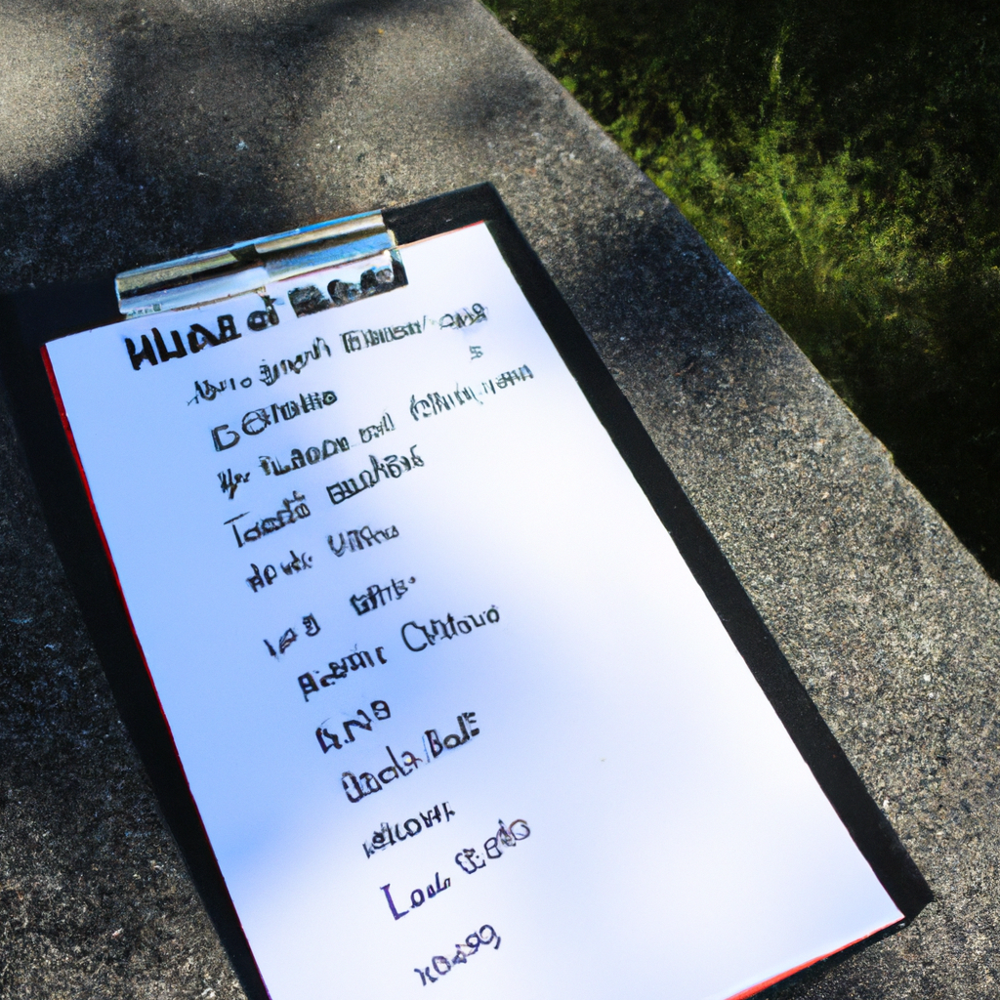

The list of the ultimate dad jokes from around the world
As a dad, the greatest gift I can give my kids is a good sense of humor. Whether it’s a silly pun or a corny one-liner, a good joke can lighten any mood and make for a much better day.
With that in mind, I’ve scoured the world for the ultimate dad jokes. From the classic knock-knock jokes to the outlandish puns, these jokes are sure to put a smile on your face and a chuckle in your heart.
First up: the classic knock-knock jokes. Whether it’s “Who’s there?” “Boo!” “Don’t cry, it’s only a joke!” or “Who’s there?” “Olive” “Olive who?” “Olive you!”, these jokes never get old.
Then there are the puns. These jokes are sure to make you groan, but they’re also sure to make you laugh. For example, “What do you call a fake noodle? An impasta!” Or, “Why don’t scientists trust atoms? Because they make up everything!”
Finally, there are the jokes that are just plain silly. Like, “Why did the scarecrow get a promotion? Because he was outstanding in his field!” Or, “What do you call a bear with no teeth? A gummy bear!”
No matter what kind of joke you’re looking for, there’s sure to be something here to make you smile. So why not bust out your best dad jokes and make sure everyone’s day is a little brighter?